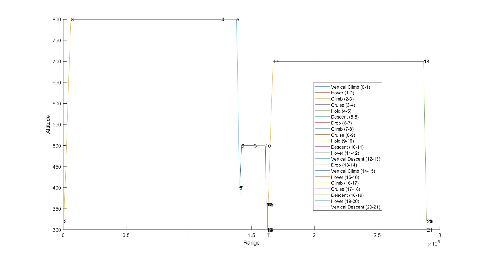
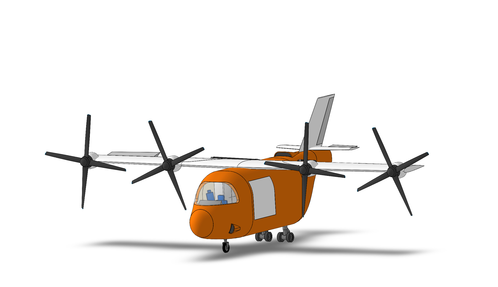
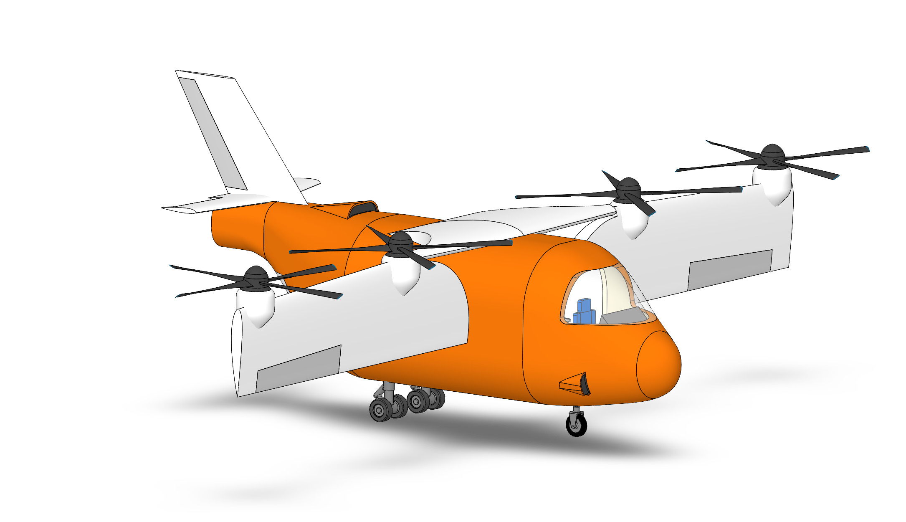
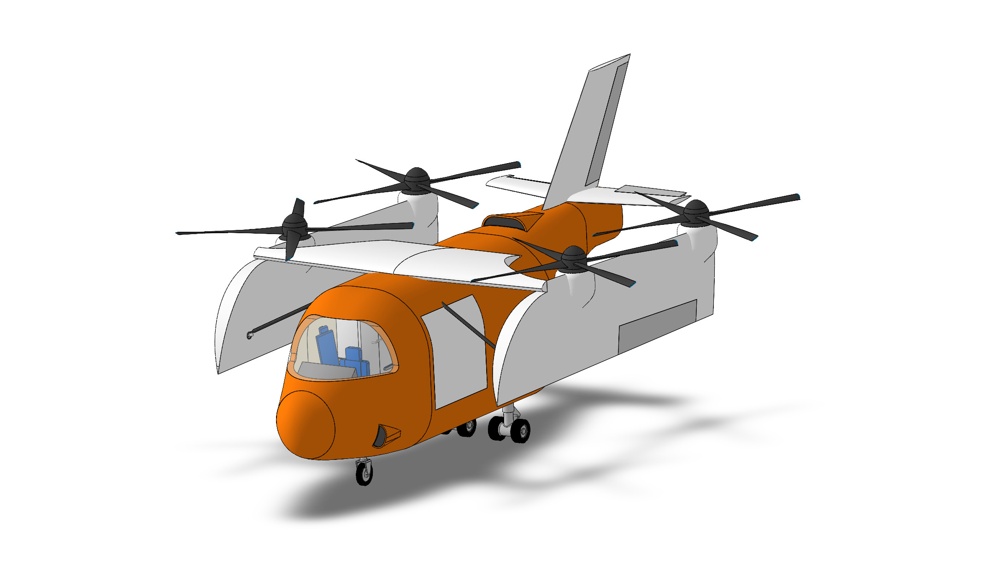
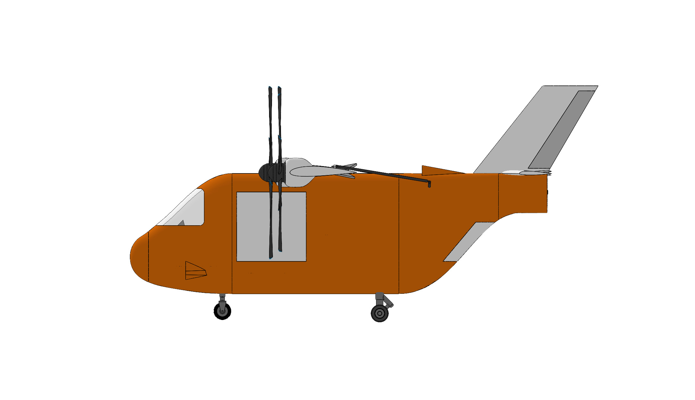
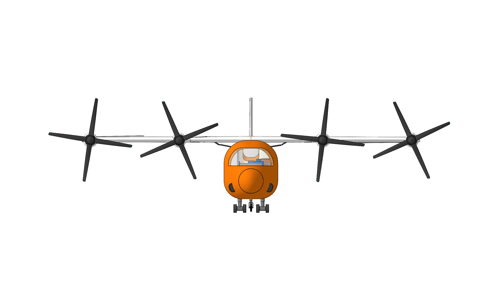
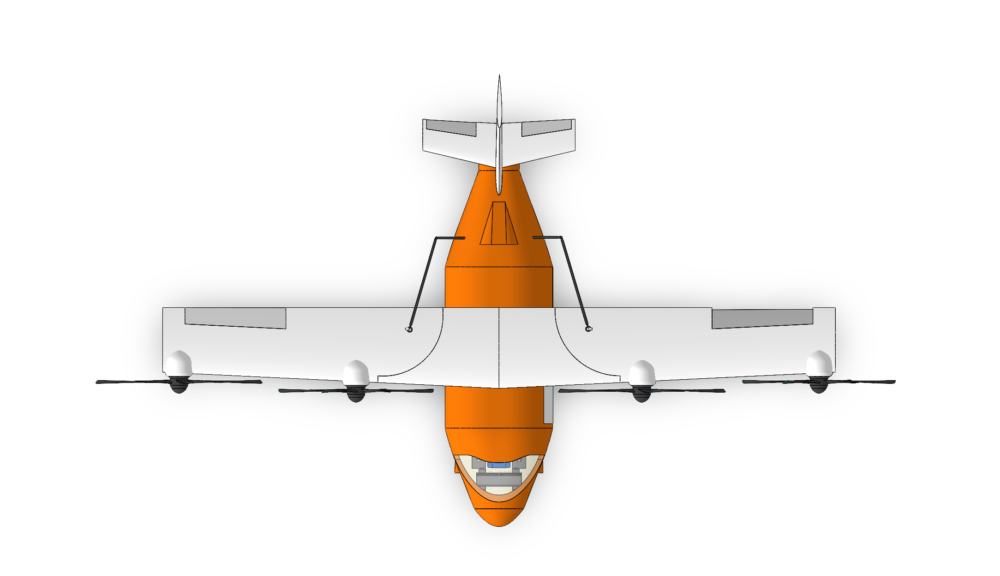
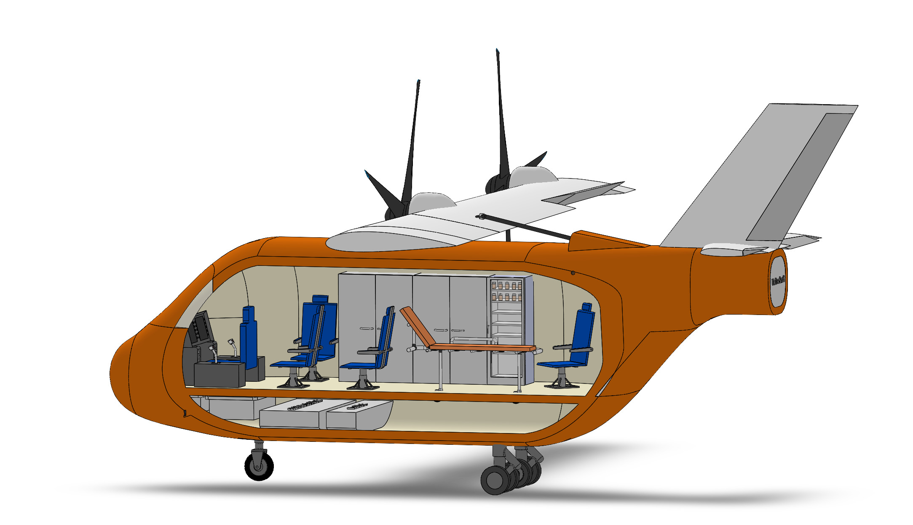
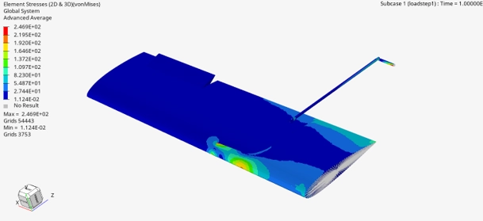

VTOL Aircraft — Firefighting & Search and Rescue
Conceptual design of a tilt-wing VTOL for emergency response. I was involved across most stages, from mission requirements to configuration, CAD and preliminary analysis. The project was selected for the final presentation.

What I did
For the Integrative Project of my Aerospace Engineering BSc, our team designed a VTOL aircraft for firefighting and search & rescue missions. I took part in mission definition, concept comparison, aircraft configuration, 3D CAD, airfoil selection, structural simulation and iterative sizing.
Mission & concept
Defined operational requirements and compared preliminary configurations for firefighting and SAR.
Configuration & CAD
Aircraft layout and 3D model integrating fuselage, wings, propulsion and mission equipment.
Aerodynamics
Evaluated candidate airfoils and defined the final wing geometry.
Structures & performance
Supported structural simulations and iterative sizing for vertical and forward flight.
Mission & concept development
The aircraft had to support firefighting and SAR in remote, uneven, hard-to-reach areas. Scenarios covered dedicated SAR, dedicated firefighting and combined missions. The firefighting mission carried and released about 300 kg of fire-retardant gel while SAR missions carried rescued occupants and emergency equipment.

Concept comparison
Preliminary configurations explored rotor arrangements, wing layouts, propulsion systems, cabin layouts and ground-operation needs. They were compared on price, autonomy, sustainability, dimensions, redundancy and load capacity. The final design combined characteristics of two of the preliminary concepts.
Aircraft configuration
I helped develop the configuration and its 3D representation, translating the selected concept into a coherent layout that accounts for dimensions, component positions, payload, propulsion and centre of mass.
The final aircraft is a tilt-wing VTOL: wings and propulsion rotate between vertical and forward flight, and a folding mechanism shrinks the aircraft for transport. The cabin fits a pilot, four seated passengers and a foldable stretcher, with dedicated space for firefighting and other mission equipment.



CAD & aircraft design
The geometry was developed alongside the analysis, integrating fuselage, wings, tail, propulsion, landing gear, internal equipment and mission-specific components. Parameters such as wing dimensions, rotor configuration and propulsion power were changed to improve performance across the mission profiles.




Aerodynamic & structural analysis
Aerodynamics
Several NACA airfoils were evaluated before selecting the NACA 2415 for the final wing, a high-wing trapezoidal configuration with an aspect ratio of about 8.3.

Structures
Structural simulations compared the wing rotation mechanism in conventional and folding-wing configurations. The folding configuration showed higher stresses, highlighting the structural cost of the rotation mechanism. However, mechanism integrity and dynamic behaviour were flagged for further analysis.


Performance & design iteration
The configuration was refined through iterative sizing and performance analysis, adjusting rotor dimensions, propulsion power, wing span and aspect ratio to satisfy both vertical and forward flight.
Because one aircraft had to fly four mission profiles, the final configuration is a compromise between SAR, firefighting and combined missions rather than an optimum for one condition. The final design-point analysis gave an estimated MTOW of about 2,300 kg, with the selected design points inside the feasible regions for the studied missions.

Final concept
The final concept combines VTOL capability, a hybrid propulsion architecture, a tilt-wing configuration and mission-specific payload capacity in one aircraft for emergency response, operating in cruise, VTOL and compact transport modes. The project took a design problem from mission requirements through concept generation, configuration, CAD, analysis and iteration.